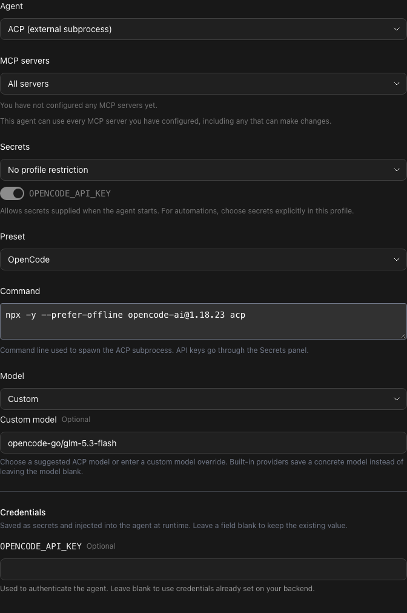
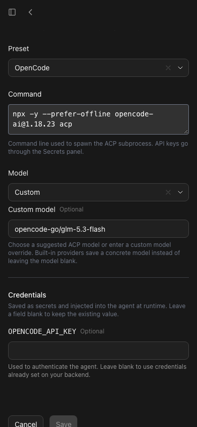
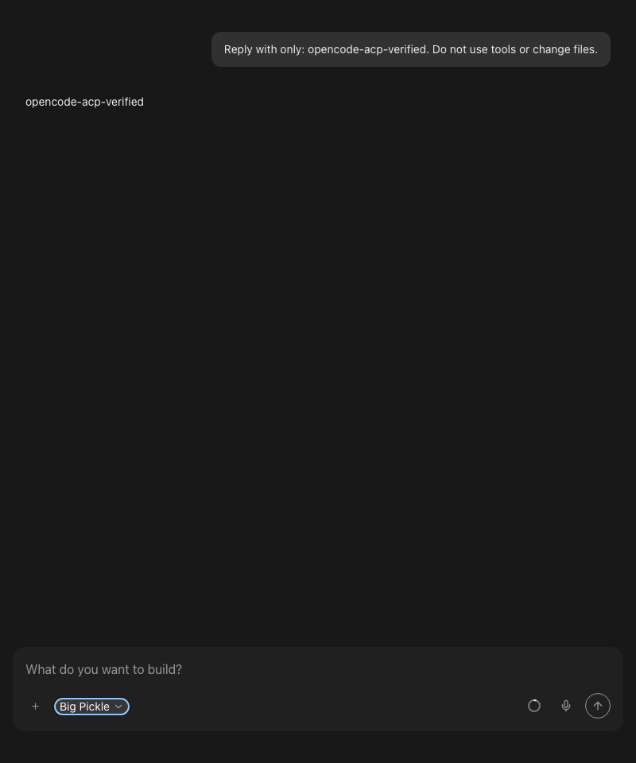
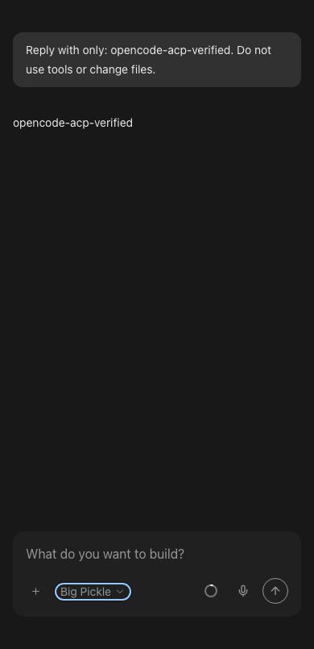
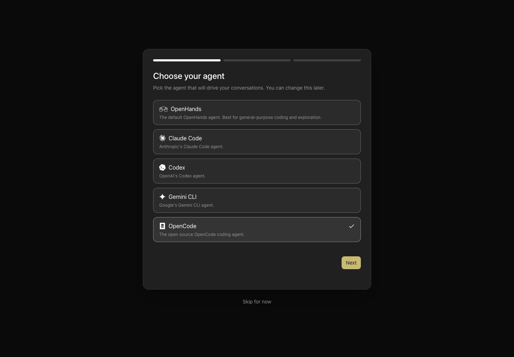

One OpenCode preset, with a choice of Go models
I checked the question raised by ArneNostitz: does using OpenCode Go require setting up every model separately?
What a user needs to set up
- Choose ACP (external subprocess) → OpenCode in Settings → Agent.
-
Configure the provider once. The registry exposes
OPENCODE_API_KEY; existing credentials belong on the machine running the agent-server, not necessarily the browser machine. -
Select Model → Custom and enter an exact ID from
OpenCode, such as
opencode-go/kimi-k3. Keep the OpenCode preset and default command. - Edit that same profile to choose a different model for new conversations. Separate profiles are optional saved preferences, not separate provider integrations.
The official
Go guide describes connecting
Go once and using /models to select a model. The
CLI model command
lists configured providers. The model catalog currently declares
OPENCODE_API_KEY for opencode-go.
Boundary: Canvas's conversation picker uses the SDK's
static suggestions. This PR does not automatically synchronize the
entire Go catalog or add every Go model to that picker. A custom model
ID is supported in the profile editor; live switching among arbitrary Go
models was not verified. Go and Zen model namespaces must not be
confused: opencode-go/… versus opencode/….
Run identity
Repository: OpenHands/OpenHands. Base:
6e8157147936768bf358903a6341bc01e0ce1ac9. Tested production
revision: 2102d523774a0f2bd7d51295384f084e72688f00. This
follow-up adds two regression cases and review evidence only; it does
not change the production bundle.
Isolated run pr17758-go-check, starting 2026-10-07 18:24:55
UTC; teardown recorded in the private run ledger. Node 26.0.0, macOS
arm64, Chromium 153.0.8010.12 (Playwright build 1243), dark theme,
system fonts. Agent Server and TypeScript SDK 1.53.0, automation 1.19.0.
Ports: ingress 18800, agent-server 18801, automation 18802, frontend
18803, reserved editor 19801. Launcher defaults were used; no version
overrides. npm run build:app produced the served bundle;
doctor confirmed the build fingerprint, backend compatibility,
authenticated API and rejected unauthenticated requests.
No host login or user workspace was copied. Telemetry was disabled. The Go catalog check and secret-storage check used a clearly invalid placeholder, never a subscription key. One short real inference used the available Big Pickle route; no paid Go call or purchase was made.
Coverage ledger
Two affected feature families (F01, F13), not an exhaustive audit of either family. Twelve scoped checks: 10 pass, 0 fail, 1 blocked, 1 outside scope/not-run.
| Check / entry point | Actual observation | Result |
|---|---|---|
| Paid Go inference | No approved subscription key/entitlement supplied. Repeat with the user's Go account before claiming paid model access. | Blocked |
| Automatic Go catalog in conversation picker | Outside this preset PR. Existing picker uses static SDK suggestions; automatic discovery would be follow-up work. | Not-run |
| F01 desktop onboarding, 1440×1000 | OpenCode is a selectable first-class option and advances to credentials. | Pass |
| F01 phone onboarding, 390×844 | Selection and credentials steps are usable; exactly one optional OPENCODE_API_KEY field. | Pass |
| F13 create Go profile | UI save persisted opencode-go/kimi-k3, acp_server=opencode, acp_command=null. | Pass |
| F13 reload/edit | After reload, the UI and real API both retained the same Go model. | Pass |
| F13 change model | Saved opencode-go/glm-5.3-flash in the same profile ID; preset and null command retained. | Pass |
| F13 phone editor | 358px-wide form at 390px viewport; no page horizontal overflow. Model can be edited and saved. | Pass |
| F13 provider secret storage | One placeholder secret saved. Reopening showed “Already saved — leave blank to keep”, a blank masked field, and configured banner. This checks storage, not authentication. | Pass |
| F13 real ACP conversation | Expected opencode-acp-verified reply, finish ActionEvent and finished state. Initial 60s poll expired during cold start; actual finish was about 72s after submission. | Pass |
| F13 phone reply | Actual completed reply and Big Pickle chip readable at 390×844. Layout-only check of that completed conversation. | Pass |
| Pinned CLI Go catalog | opencode-ai@1.18.23 listed 29 Go models after configuring the placeholder env key and refreshing. With no credential it reported Provider not found. Neither result tests authentication. | Pass |
Fresh, real application screenshots
No mocked API, DOM mutation or generated image. Images were captured with the repository's verification CLI and reviewed before publication.




First-class OpenCode onboarding

Regression and CI evidence
Added two profile-editor regression cases for Go IDs outside the static suggestions: reopening and changing the model must preserve the OpenCode preset and registry command.
- Seven focused suites: 189 tests passed. Agent settings alone: 50 passed.
- Full lint/typecheck/format command: passed, 0 errors and 528 existing warnings. Diff whitespace check passed.
- Production app build passed in this run. App/library builds and locale-completeness checks also passed in the preceding merge validation.
- GitHub Ubuntu and Windows test-and-build checks passed on production revision 2102d5237. CI for the follow-up commit is separate; do not treat the prior run as that commit's CI.
- Full local suite from merge validation: 8,538 tests passed, 2 failed, 7 todo. The two failures are unchanged Docker session-key policy tests on macOS Bash 3.2; upstream reproduces the same exit-127 failure. See MERGE-VALIDATION.txt. The full local suite is not claimed all-green.
- PR-description check still fails for the linked issue's missing enhancement label. It is not the required test-and-build check; no human-authored PR section was modified.
npm test -- src/constants/acp-providers.test.ts __tests__/constants/acp-providers.test.ts __tests__/routes/agent-settings.test.tsx __tests__/components/onboarding/choose-agent-step.test.tsx __tests__/components/onboarding/setup-acp-secrets-step.test.tsx src/api/agent-server-compatibility.test.ts src/api/no-direct-agent-server-calls.test.ts npm run lint OPENCODE_API_KEY=verification-placeholder-not-a-real-key npx --yes --prefer-offline opencode-ai@1.18.23 models opencode-go --refresh
Teardown and remaining work
Deleted the run-owned placeholder secret and QA Go profile through the UI. Stopped only this run's browser and launcher; the verification CLI confirmed all five reserved/listening ports closed. Screenshots and the private evidence ledger were retained, and a retained PNG was checked after shutdown. No browser errors or app warnings were recorded during the tested paths.
Remaining prerequisite: approved Go credentials for subscription-backed inference. Remaining optional enhancement: provider-backed discovery of the Go catalog for the live model picker. No claim that all providers, all Go models, tools, permissions, or every settings entry point were exercised.